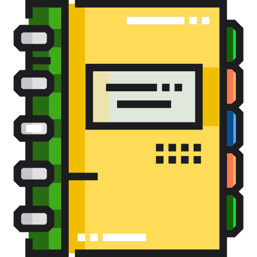

BACK

AREA V
RESEARCH
PARAMETER A: Priorities And Relevance
SYSTEM-INPUTS AND PROCESS
S.1. The institution's research agenda is in consonance with institutional, regional and national priorities concerned such as
DOST, CHED-National Higher Education Research Agenda, NEDA, etc.
S.2. The institution has an approved Research Manual.
IMPLEMENTATION
I.1. The approved Research Agenda is implemented.
I.2. The following stakeholders participate in the formulation of research agenda as bases for identifying institutional
thrusts and priorities:
I.2.1. administrators;
I.2.2. faculty;
I.2.3. students;
I.2.4. government agency representatives (DOST, CHED, NEDA, etc.); and
I.2.5. other stakeholders (alumni, parents, etc.)
I.3. action researches to test theory in practice are conducted by faculty and students.
I.4. Team/collaborative and interdisciplinary research is encouraged.
I.5. Research outputs are published in refereed national an/or international journals.
OUTCOME/S
O.1. Priority researches are identified and conducted.
O.2. Research results are published.
PARAMETER B: Funding And Other Resources
SYSTEM-INPUTS AND PROCESS
S.1. The institution has an approved and adequate budget for research.
S.2. There are provisions for the following:
S.2.1. facilities and equipment such as internet, statistical software, and other ICT resources;
S.2.2. research staff;
S.2.3. supplies and materials; and
S.2.4. workplace.
IMPLEMENTATION
The institution:
I.1. allocated adequate funds for the conduct of faculty and student research.
I.2. establishes linkages with the local/national/international agencies for funding support and assistance.
I.3. maintains a functional and long-range program of faculty/staff development to enhance research capability
and competence.
I.4. encourages the conduct of externally-funded researches.
OUTCOME/S
O.1. the Research Program is adequately funded.
PARAMETER C: Implementation, Monitoring, Evaluation And Utilization Of Research Reluts/Outputs
SYSTEM-INPUTS AND PROCESS
S.1. There is a system of implementation, monitoring, evaluation and utilization of research outputs.
S.2. The institution has a policy on Intellectual property Rights (IPR).
IMPLEMENTATION
I.1. The institution/College/Academic Unit has a Research Unit managed by competent staff.
I.2. The Research Manual provides guidelines and procedures for the administration and conduct of research.
I.3. The faculty conduct applied and operational researches in their field of specialization in accordance with the thrusts
and priorities of the program/institution.
I.4. The institution provides incentives to faculty researchers such as honoraria, service credits, de-loading, etc.
I.5. The College/Academic Unit requires its students to conduct research, as a course requirement, (whenever applicable).
I.6. The institution provides opportunities for advanced studies and/or training to enhance faculty/staff research competence.
I.7. Completed and on-going research studies are periodically monitored and evaluated in local and regional in-house reviews.
I.8. Research outputs are utilized as inputs in:
I.8.1. institutional development;
I.8.2. the improvement of instructional processes; and
I.8.3. the transfer of generated technology/knowledge to the community.
I.9. Packaged technologies and new information are disseminated to the target clientele through appropriate delivery systems.
I.10. The institution ensures that:
I.10.1. Research outputs are protected by IPR laws; and
I.10.2. Faculty and students observe research ethics to avoid malpractices like plagiarism, fabrication of data, etc.
OUTCOME/S
O.1. Implementation, monitoring, evaluation and research utilization of outputs are effective.
PARAMETER D: Publication And Dissemination
SYSTEM-INPUTS AND PROCESS
S.1. The institution has an approved and copyrighted Research Journal.
S.2. The institution has incentives for:
S.2.1. paper presentation;
S.2.2. journal publication;
S.2.3. outstanding research related performance; and
S.2.4. patented outputs.
IMPLEMENTATION
I.1. The institution provides opportunities for the dissemination of research results in for a, conferences, seminars, and
other related means.
I.2. The institution regularly publishes a research journal.
I.3. Library exchange of research publications with other HEI's and agencies is maintained.
I.4. Research manuscripts/technical reports are well-written, and edited following the institutional format.
I.5. The institution supports the researchers in all of the following activities:
I.5.1. Instructional Materials Development;
I.5.2. paper presentations, journal publication, classroom lectures, and other similar activities;
I.5.3. editorship/writing in academic, scientific and professional journals;
I.5.4. thesis/dissertation advising; and
I.5.5. patenting of research outputs.
I.6. Research results are published preferably in refereed journals.
I.7. Research results are disseminated to the target clientele.
I.8. The College/Academic Unit generates income from patents, licenses, copyrights, and other research outputs.
OUTCOME/S
O.1. Research outputs are published in refereed journals.
O.2. Research outputs are utilized.
O.3. Patented and copyrighted research outputs are commercialized.
EXHIBITS
SELF-SURVEY RATINGS
PPP
PROGRAM COMPLIANCE